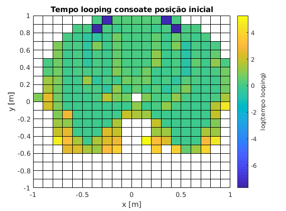

%Reset do ambiente de trabalho clear; close all; %Tempo de cada simulação ttotal = 250; %Condições iniciais m=1; l=0.5; g=9.8; dt10 = deg2rad(0); dt20 = deg2rad(-30); %Matriz de pontos iniciais da ponta do pêndulo [x, y] = meshgrid((-2*l:0.1:2*l), (-2*l:0.1:2*l)); matrix_size = size(x); %Matriz dos tempos finais iniciado a NaN tfinal = NaN(matrix_size); for r = 1:matrix_size(1) for c = 1:matrix_size(2) %Para cada valor da matriz %Calcula-se os angulos iniciais t0_calc = t0Calc([x(r, c), y(r, c)]); t10 = t0_calc(1); t20 = t0_calc(2); %Caso seja uma posição possível if ~isnan(t10) && ~isnan(t20) %Calcula-se os p iniciais p0_calc = p0Calc([dt10, dt20, t10, t20]); p10 = p0_calc(1); p20 = p0_calc(2); %Simula-se sim("pendulum"); %Encontra o primeiro valor de t1 que seja maior em módulo que pi tf1 = find(abs(t1) > pi, 1); %Encontra o primeiro valor de t2 que seja maior em módulo que pi tf2 = find(abs(t2) > pi, 1); %Cálcula o tempo de looping final como o menor entre os tempos dos dois angulos if ~isempty(tf1) && ~isempty(tf2) tfinal(r, c) = log(tout(min(tf1, tf2))); elseif ~isempty(tf1) tfinal(r, c) = log(tout(tf1)); elseif ~isempty(tf2) tfinal(r, c) = log(tout(tf2)); end end end end s = pcolor(x, y, tfinal); c = colorbar; c.Label.String = "log(tempo looping)"; title("Tempo looping consoate posição inicial"); xlabel("x [m]"); ylabel("y [m]");
Comentários: Observa-se os espaços a branco da grelha apresentada correspondem às posições iniciais que impossíveis ou que não chegam a fazer um looping no tempo simulado. Em geral podemos verificar que quanto maior for o y da posição inicial mais rápido o pêndulo faz o primeiro looping. Isto deve-se ao facto de quanto maior y, maior a altura, logo maior a energia potencial. Podemos também verificar a existência de um buraco de espaços brancos localizados a volta de x = 0 e y < 0 que nunca